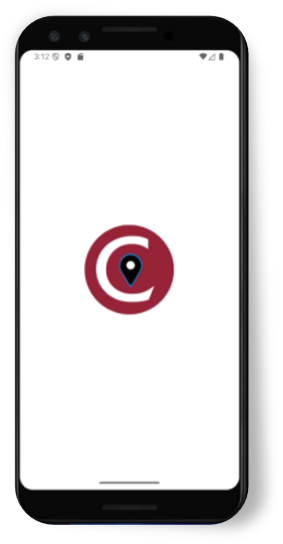
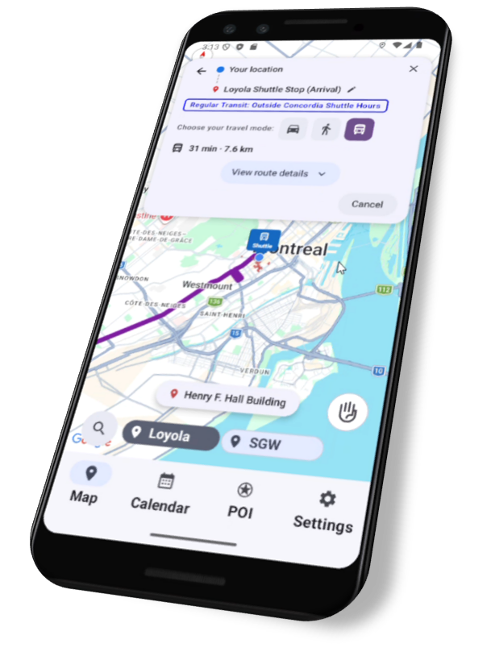
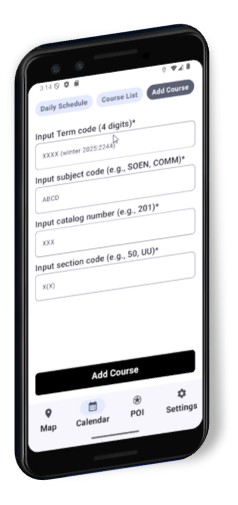
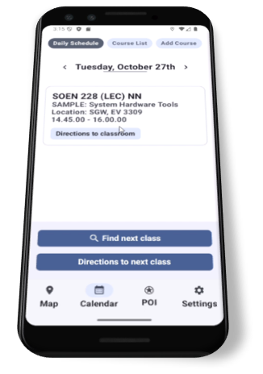
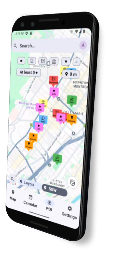

← All projects
Concordia Campus Guide
FullStack Developer & Tester · 2025
MapsAPIKotlinConcordia Open DataIndoor MappingFullStack Developer & Tester · 2025
MapsAPIKotlinConcordia Open DataIndoor MappingConcordia Campus Guide is a navigation app that helps students get around the SGW and Loyola campuses. It offers outdoor directions by walking, driving or public transit (including the Concordia shuttle), indoor maps with room search and shortest-path routing between floors, and accessibility-aware routes. It also connects to a student's calendar to find their next class and guide them to the right room, and shows nearby points of interest such as restaurants and coffee shops. The aim was to cut down on confusion, wasted time and accidental cardio.
We built this as a team. I handled the routing and the API integration, and wrote the front-end logic that decides what the user sees for shuttle directions: when the shuttle is running and available, and when it is out of schedule and the app suggests public transit instead. I also built the points-of-interest map and its labels. On the quality side, I ran usability testing and wrote unit and end-to-end tests.




